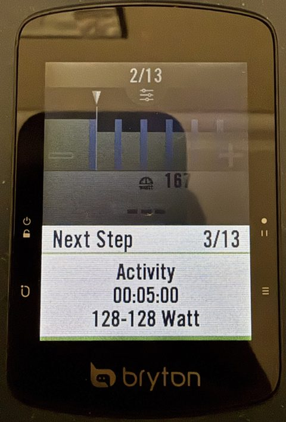
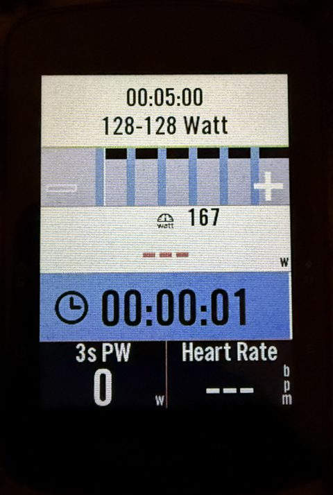
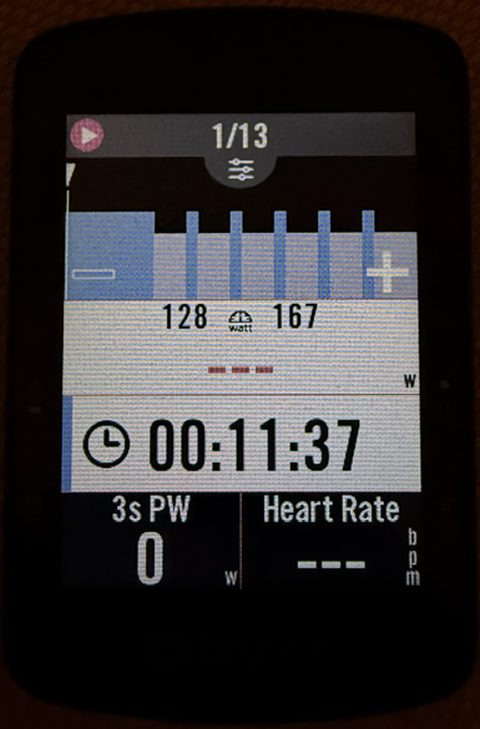
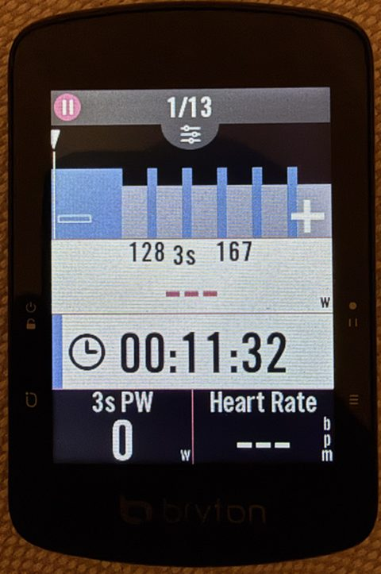
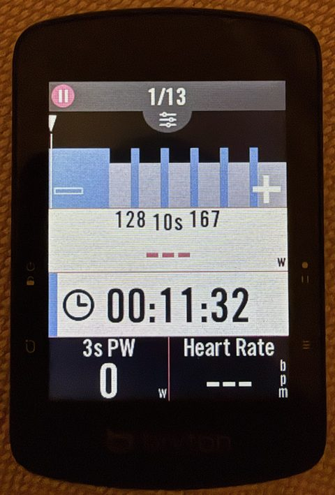
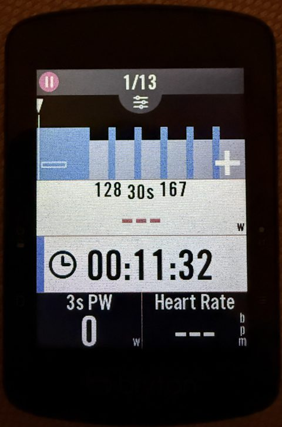

Rider S510 mods
Small improvements to the Bryton Rider S510's workout screen, built into its firmware in your browser. Nothing to install.
What it changes
Next step: a strip over the chart instead of a full-screen popup


Also: 3 countdown beeps (3-2-1) before a step ends instead of ~9, and the strip always hides when the step changes, even on 15 s intervals.
Tap the big power number to smooth it




Each tap on the power box switches to the next one; the label between the target numbers shows which. Your choice is kept when you switch the unit off.
Unofficial, not affiliated with Bryton. Use at your own risk. Tested on one unit on firmware R039. Going back to stock is the same simple procedure, and a unit that no longer starts can be recovered (recovery guide).
1 Check your bike computer
- Plug it into your computer. On its BRYTON drive, open
System/device.txt: the first lines must read[OS]/Version=R039. Older version: update it with the Bryton Active app first. Newer version: not supported yet. - Battery at least 38 %, otherwise the unit silently skips the update.
2 Choose what to change
Loading the list…
Developer and test patches
3 Build
Your browser downloads the official firmware from Bryton's server, checks it is exactly R039, applies the changes and re-checks everything the bike computer checks. The firmware never comes from this site.
4 Put it on the bike computer
Copy IMG.bin and update.ini to the top level of the BRYTON drive
(next to the System folder), replacing any files with the same name.
- Activities
- Map
- PlanTrip
- System
- Tracks
- Workout
- … other folders, leave them alone
- IMG.bincopy here
- update.inicopy here
Check the names: exactly IMG.bin and update.ini. Browsers sometimes rename a
second download to update (1).ini; rename it back. Don't put the files inside System
or any other folder.
5 Install
- Eject the BRYTON drive, then unplug the cable.
- The bike computer restarts, shows a firmware-update animation for about a minute, and restarts again.
- Done. It keeps your settings, rides and workouts.
If no animation appears: battery under 38 %, or the files were not at the top level of the drive.
Questions
What happens when Bryton releases an update?
The Bryton app will offer it as usual. Accepting installs Bryton's new firmware, which removes these changes until they are adapted to it. Declining keeps your patched R039. The patches can never be applied to the wrong firmware: the builder refuses anything that isn't exactly R039.
How do I go back to stock?
Click Back to stock firmware, then do steps 4 and 5. That installs Bryton's original file, unchanged.
What if it doesn't start any more?
The bootloader (the part that starts the firmware) is never modified, and it has a recovery mode that can rewrite the stock firmware. It needs a computer with Python: see the recovery guide.
Which browsers work?
Current Chrome, Edge, Firefox and Safari. Writing straight to the drive needs Chrome or Edge; with the others, download the 2 files and copy them yourself.